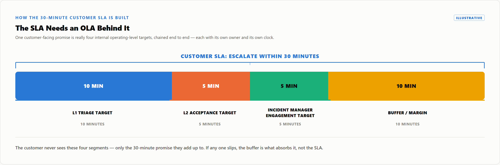

A customer SLA reads as one promise, but a chain of agreements behind it — invisible to the customer — decides whether it holds. ITIL structures that chain as three instruments, each with its own owner, each able to break the number.
Per ITIL: an SLA is the commercial, externally-visible promise; an OLA supports it internally — L1 to L2, SOC to platform — no penalty, just an owner and clock; a UC is with an external supplier the SLA depends on, e.g. an EDR vendor's isolation turnaround. This chain shows whether a breach traces to an OLA, a UC, or slow analysts.
| Instrument | Relationship | What a breach means |
|---|---|---|
| SLA | Provider ↔ customer | Credits, penalties, trust erosion |
| OLA | Provider's own teams | Invisible to the customer; the SLA's buffer |
| UC | Provider ↔ external supplier | Elapsed time the provider never controlled |
Per ServiceNow's own Service Level Management documentation, SLA/OLA/UC records run on the same timer/task engine, differentiated only by a "Type" field — a missing OLA is a configuration gap, not a platform limit. Case Study 7 is exactly that gap.
Take a customer SLA promising P1 escalation to L2 within thirty minutes: delivering it means decomposing that clock into owned segments plus a buffer.

L2's five minutes accepts the ticket, not resolves it. Each segment should be its own OLA, so a red number points to which segment ate the buffer.
An SLA without a backing OLA chain is unmeasured, not conservative: no leg is bounded, so time can vanish at any handoff. Case Study 7: L1 triaged in twelve minutes, inside that account's own OLA target (a separate figure from the illustrative 10-minute example above); no OLA covered L2 acceptance, so the ticket sat unopened forty-five more minutes — fifty-seven total against a thirty-minute SLA, from one unowned segment.
Case Study 8 mirrors this one layer out: a flawless OLA chain can still miss the SLA if resolution depends on an external UC — a cloud control-plane action, an ISP null-route — the last mile the provider never controlled. Soundness needs both halves.
Every SLA a customer signs has a silent co-signer: the OLA and UC chain behind it. No SOC can out-perform a promise that a third party's contract already broke.